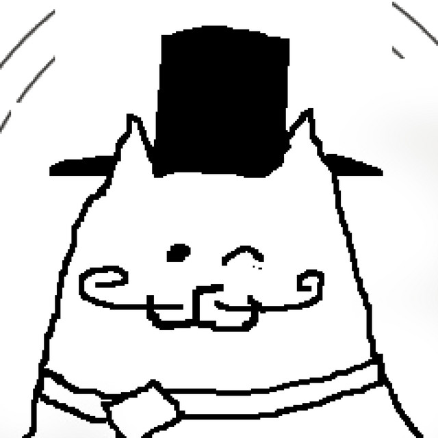
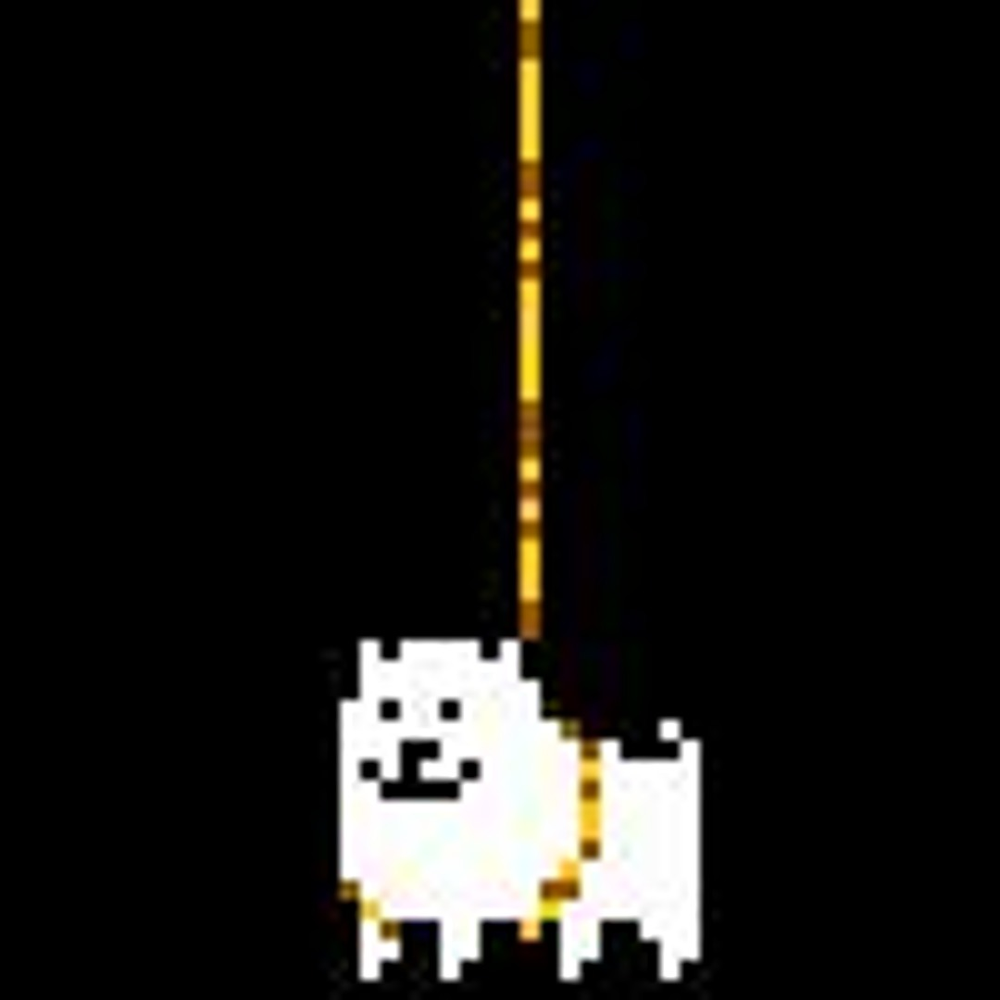
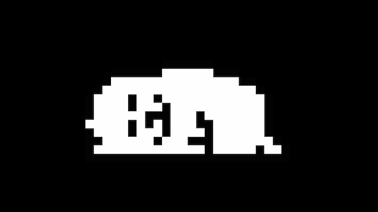

HOME/ |
FRISK/ |
BOSSES/ |
AÇÕES/ |
CRIADOR |

TOBY FOX
Toby Fox é o criador e compositor de Undertale, RPG lançado em 2015 que se tornou um grande sucesso por sua história, personagens e trilha sonora. O Annoying Dog é um cachorro branco que representa o próprio Toby dentro do jogo, aparecendo em cenas engraçadas, escondendo segredos e quebrando a quarta parede.



EXPLICAÇÃO DETALHADA
Toby Fox é um desenvolvedor de jogos, compositor e roteirista americano, conhecido mundialmente por criar Undertale, lançado em 2015. Antes do sucesso do jogo, ele produzia músicas para comunidades de fãs, especialmente de EarthBound, e participou do desenvolvimento de ROM hacks. Durante a criação de Undertale, Toby trabalhou praticamente sozinho, sendo responsável pela programação, roteiro, trilha sonora e pelo design de grande parte do jogo. Essa dedicação resultou em uma obra marcante, elogiada por sua narrativa, humor, personagens memoráveis e pela possibilidade de resolver conflitos sem recorrer à violência.
Após o enorme sucesso de Undertale, Toby Fox iniciou o desenvolvimento de Deltarune, um RPG que apresenta um universo diferente, mas com vários personagens conhecidos pelos fãs. Assim como em Undertale, ele continua sendo o principal responsável pela história, música e direção do projeto, contando com uma equipe maior para auxiliar no desenvolvimento. Seu estilo criativo mistura emoção, comédia, mistério e momentos que quebram as expectativas do jogador, tornando seus jogos únicos.
Dentro de Undertale, Toby Fox é representado pelo Annoying Dog, um pequeno cachorro branco que aparece em diversas partes do jogo. O personagem serve como um autorretrato bem-humorado do criador e costuma surgir em momentos inesperados, fazendo piadas, escondendo segredos e quebrando a quarta parede. Em uma das cenas mais famosas, o cachorro rouba o Artefato Lendário, enquanto em outras aparece em salas secretas ou até em telas de erro, como se estivesse "controlando" o próprio jogo.
O Annoying Dog também simboliza o humor característico de Toby Fox. Ele representa a ideia de que o criador pode interferir no mundo de Undertale sempre que quiser, brincando com as regras do jogo e surpreendendo o jogador. Por isso, muitos fãs fazem a piada de que o cachorro é o verdadeiro "deus" de Undertale, embora isso não faça parte da história oficial. Mesmo assim, ele se tornou um dos personagens mais icônicos da franquia e faz participações especiais também em Deltarune.
Graças à criatividade de Toby Fox, Undertale se tornou um dos jogos independentes mais influentes de todos os tempos. Sua combinação de narrativa emocionante, trilha sonora memorável e personagens marcantes conquistou milhões de jogadores ao redor do mundo. O Annoying Dog permanece como uma homenagem divertida ao próprio criador e um símbolo do humor e da personalidade presentes em suas obras.